Meiwa, Mie: things to do, food and stays
Meiwa · Mie
Meiwa
Highlighted on the Mie map.

Stay
ファミリーロッジ旅籠屋・伊勢松阪店
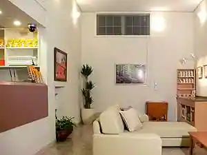
Famiri Lodge Hatago Ya Isematsu Saka
Mountain lodge in Gyobuhachitsukawa, Meiwa with breakfast available and family-friendly stays.
Dining
レストランRyu
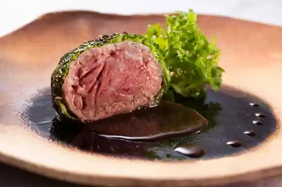
Restaurant Ryu
うなぎまつもと 明和店
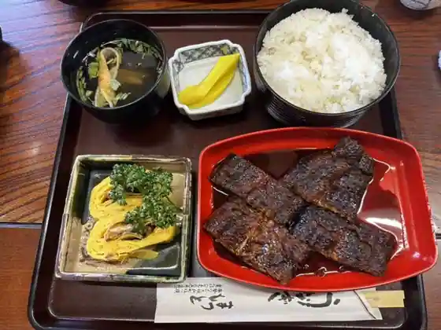
Unagimatsumoto Meiwa
カフェ シロイロ
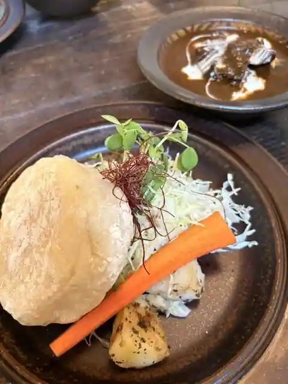
Cafe Shiroiro
とりみそ家
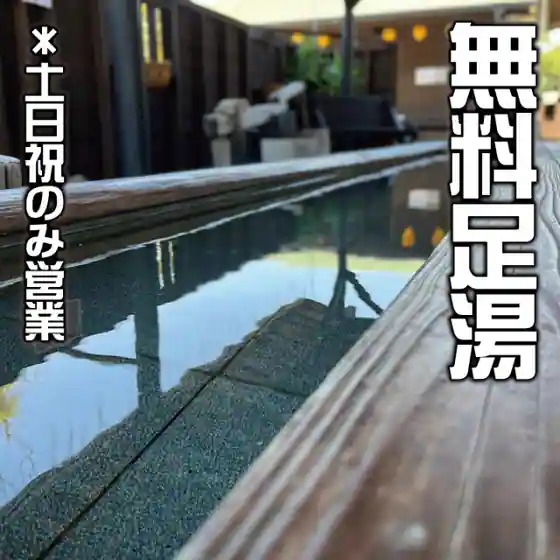
Torimiso Ie
ラ・アマート
Ra Amato
BABA bakery.
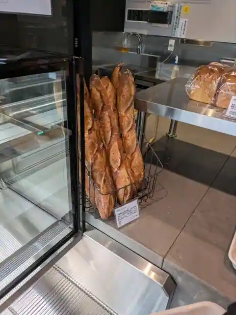
BABA bakery.
らーめん みのり
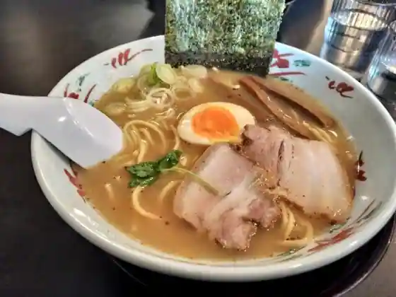
Ramen Minori
さかぐち 明和店
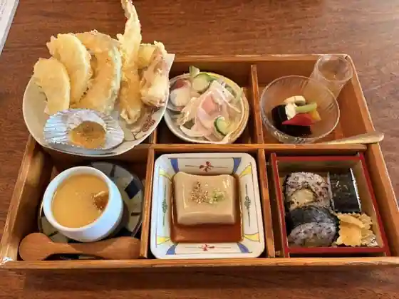
Sakaguchi Meiwa
カヴァロ
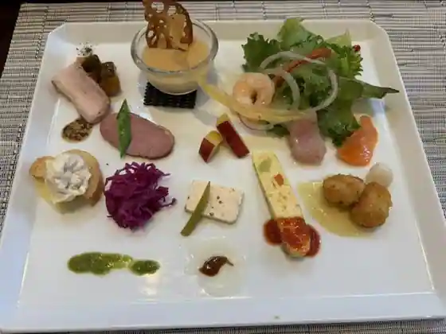
Kavaro
凱旋
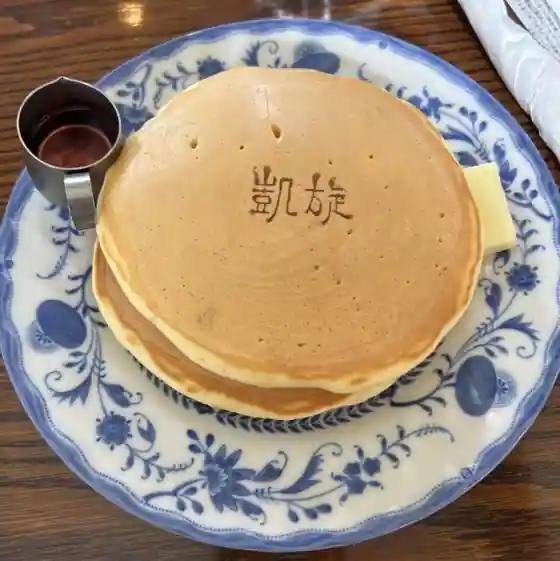
Gaisen
Cafe ＆ Store 楽
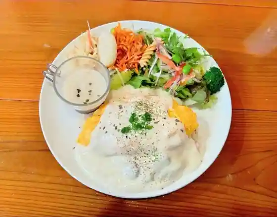
Cafe & Store Raku
パティスリーPapa
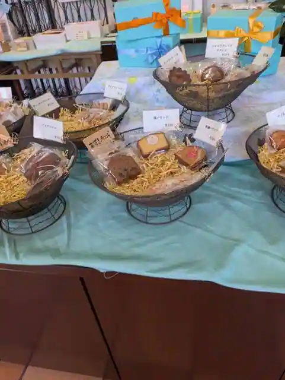
Pateisuri Papa
凛香
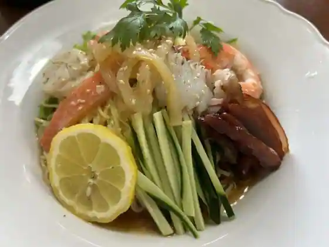
Rin Kaori
麦
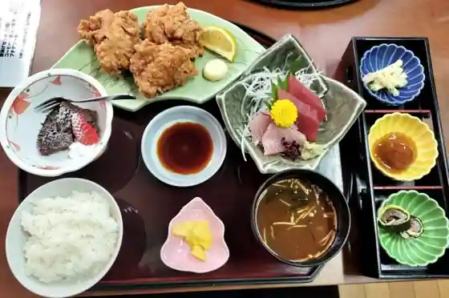
Mugi
ぷてぃあむーる
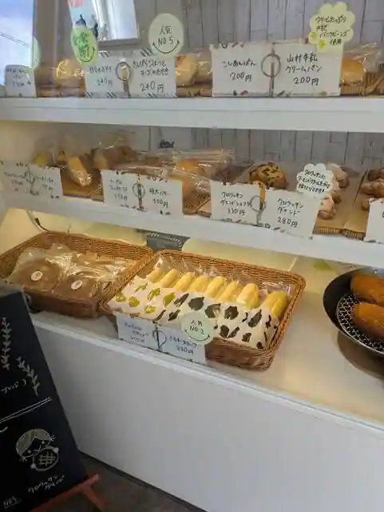
Puteiamuru
ミエルジャルダン
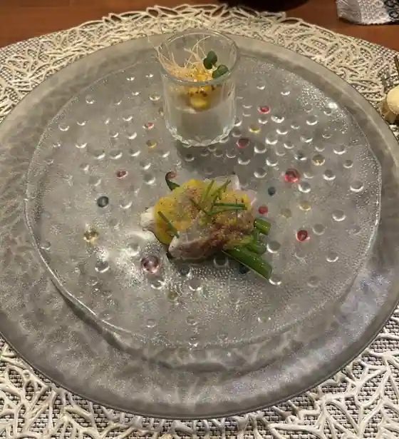
Mierujarudan
香蘭
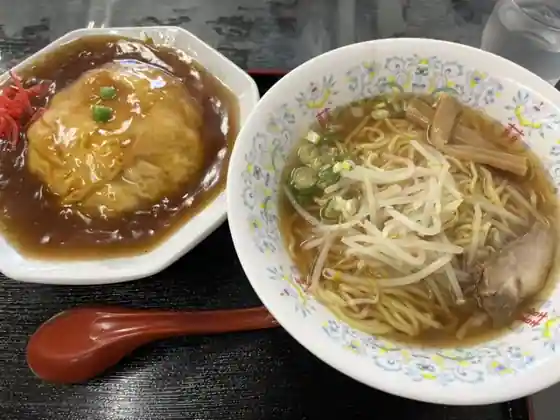
Koran
カフェ 楽香
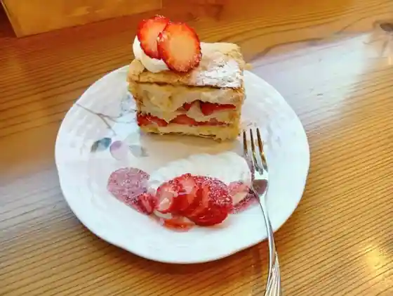
Cafe Raku Kaori
Hane
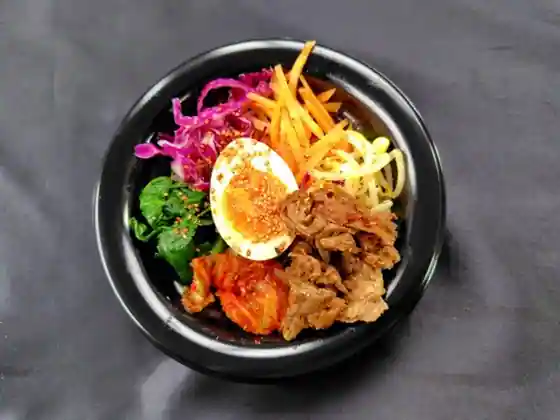
Hane
マガーズドーナツ
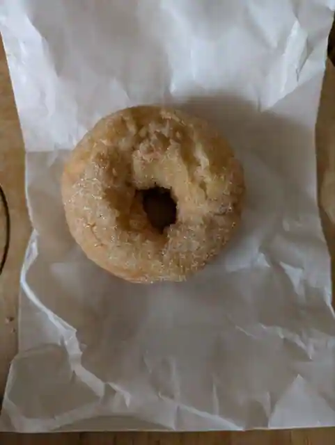
Magazudonatsu
珈琲と菓子 好日
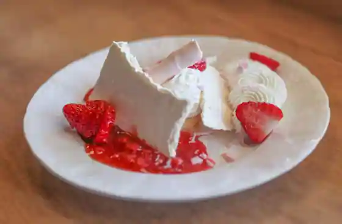
Coffee To Kashi Kojitsu
となりのれもん三丁目
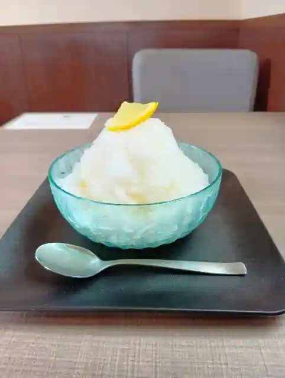
Tonarinoremon Sanchome
めし処 こさく 明和店
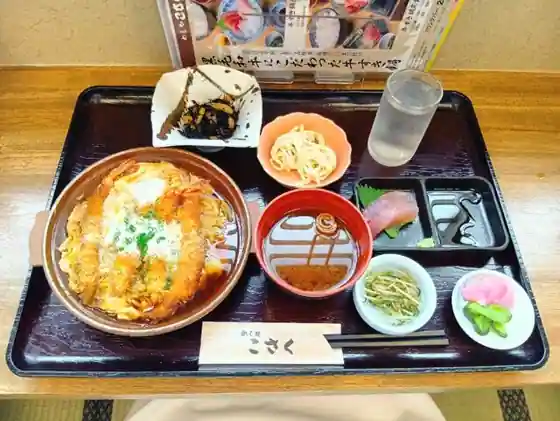
Meshi Tokoro Kosaku Meiwa
みえの丼はん
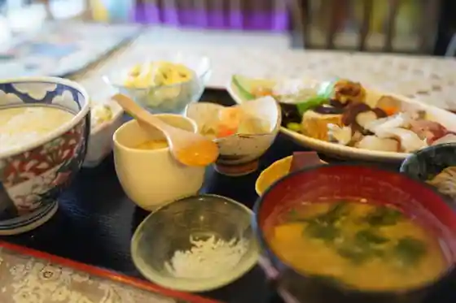
Mieno Donburi Han
Sights
Itsuki no Hanashobu Gunraku (Kaika Joho Mo Keisai)

Saiku Heian no Mori

Na no Hanahata

Matsu Sachi Nosan Korekara Village

Itsuki no Kosumosu
Itsuki no Miya Chiiki Koryu Center
Otate Plaza Otate no Izumi
Myojo Shrine
Take Shrine
Itsuki no Miya Rekishi Taiken Kan
Itsuki History Museum
Ono Minato O Misogi Ba Ato
Kagachikara Hassho Kinenhi
Kokushi Ato Itsuki Ato
Itsuki Ato Rekishi Roman Plaza
Awa Sumi Jinja Ato
Meiwa Furusato Hall (Folk History Museum)
Narihira Matsu
Take Sassa Otto Ko Angu Ato
Ken'ei Daibutsu Yama Park
Meiwa Tourist Information
Oyodo Nishi Coast Mun Beach Campground
Historic Site Mizuike Doki Seisaku Iseki
Rekishi no Michi
Anyoji
Itsuki Ike
Saio Forest